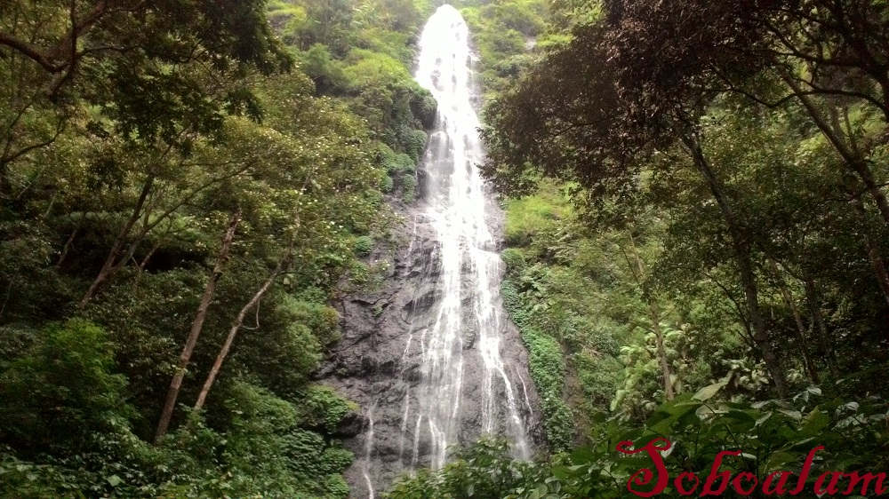

Perlu kalian ketahui bahwa Air Terjun Slimpring Merupakan air terjun yang cukup tinggi di Jawa Timur. Airnya mengalir dari mata air Gunung Anjasmoro dengan ketinggian ± 50 m yang berlokasi di ketinggian 1.038 mdpl, memiliki luas 48,66 Ha, terletak pada posisi 7° 47’ 39,39” – 7° 47’ 57,60” LS dan 112° 23’ 55,34” – 112° 24’ 31,77” BT di kawasan Tahura Raden Soerjo, yang secara administratif berada di Desa Pait Dowo Kec. Kasembon, Kabupaten Malang.
Teman-teman yang ingin berwisata kesana, bisa menggunakan kendaraan pribadi melalui jalan raya batu – jombang sekitar 25 km di pintu gerbang Desa pait dari arah Batu. Dilanjutkan dengan perjalanan menuju Desa Pait sekitar 4,6 Km menuju pintu masuk arah Coban Slimpring.
Jalan menuju Coban Slimpring merupakan jalan alami yang jarang dilewati, adapun routenya sebagai berikut :
Ada beberapa tempat perlintasan menuju Coban Slimpring belum ada fasilitas penyebarangan sungai. Jalan setapak yang jarang dilewati pengunjung perlu untuk perbaikan jalur dan jembatan agar para pengunjung mudah akses menuju lokasi coban Slipring Sebelum sampai di air terjun, ada lokasi yang cocok untuk wisata adventure permainan air (water tubing) panorama di sekitar lokasi sangat bagus di samping udara yang segar dapat dilihat pula pemandangan yang menajubkan, sebelum masuk ke air terjun ada beberapa tempat alami yang cocok untuk penggemar photografi berpose. Topografi area bervariasi dari datar, landai dan curam, memiliki view pemandangan alam yang indah dan udara yang sejuk segar dan bagi penggemar photografi dapat berswafoto (selfie) dengan background air terjun. Pada areal ini juga ditemukan sumber mata air.
Pada area ini flora yang dominan yaitu jenis Pasang (Litocarpus sundaicus) dan Kukrup (Engelhardia spicata), jenis lainnya yaitu Tutup (Macaranga gigantea), Nyampo (Litsea monopetala), Epek (Ficus sp), Anggrung (Trema orientalis), Damar (Agathis dammara), Pakis (Cycas rumphii), Satwa yang sering dijumpai yaitu kijang (Muntiacus muntjak), rusa timor (Cervus timorensis), ayam hutan (Galus sp) dan monyet ekor panjang (Macaca fascicularis).